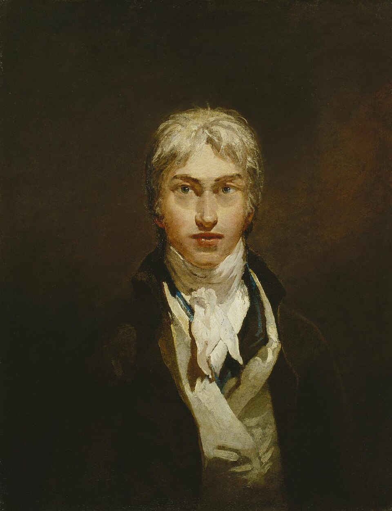

Pintor y acuarelista inglés
J. M. W. Turner
1775–1851
Entró en la Royal Academy con catorce años y acabó dejando al Estado británico casi trescientos lienzos y treinta mil obras sobre papel. Su pintura tardía disuelve el motivo en luz y atmósfera hasta un punto que sus contemporáneos leyeron como obra sin acabar. Vivió sus últimos años bajo nombre falso en Chelsea, donde los vecinos lo conocían como «el almirante Booth».